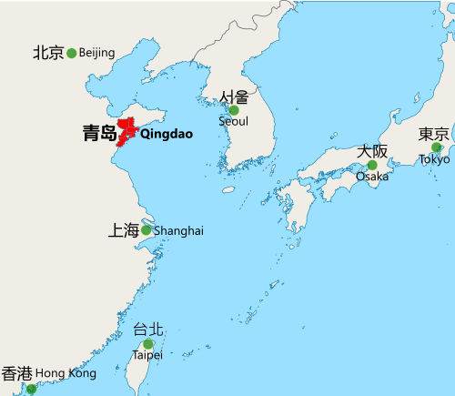
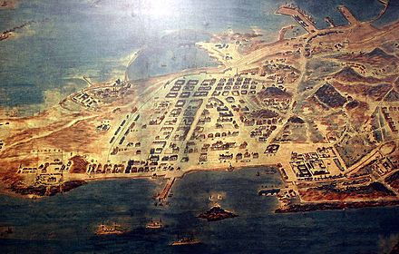

|
 |
 |
 |
 |
Welcome to Qingdao!!!
A little guide to Qingdao
Importance and Location
|  |
Qingdao is a major sub-provincial city in eastern Shandong province, China. Qingdao is a major nodal city on the 21st Century Maritime Silk Road arm of the Belt and Road Initiative that connects East Asia with Europe, and has the highest GDP of any city in the province.
Qingdao is a major seaport, naval base and industrial center. The world's second longest sea bridge the Jiaozhou Bay Bridge, straddling the Jiaozhou Bay sea areas. It is also the site of the Tsingtao brewery, the second largest brewery in China. |
History
|  |
In 1891, the Qing Government decided to make the area a primary defence base against naval attacks, and planned the construction of a city. In 1897 when the city was ceded to Germany. The Germans turned Tsingtao into a strategically important port In 1914, Japan occupied the city and the surrounding province during the Siege of Tsingtao after Japan's declaration of war on Germany. The city reverted to Chinese rule in 1922, under control of the Republic of China. Click here to learn more about Qingdao's history |